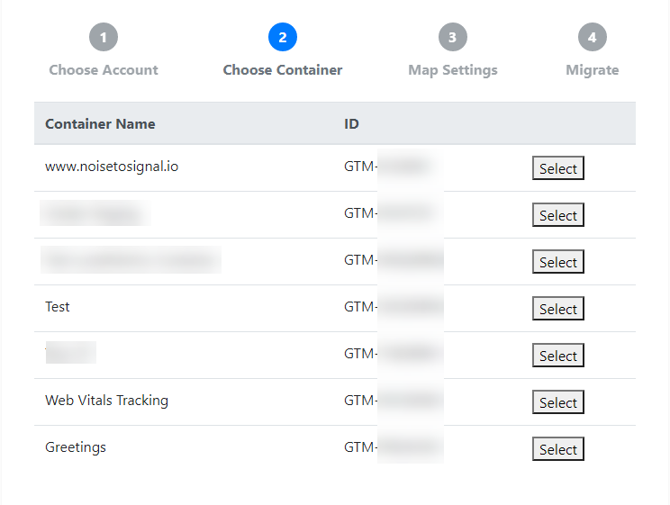
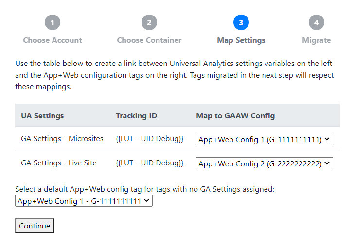
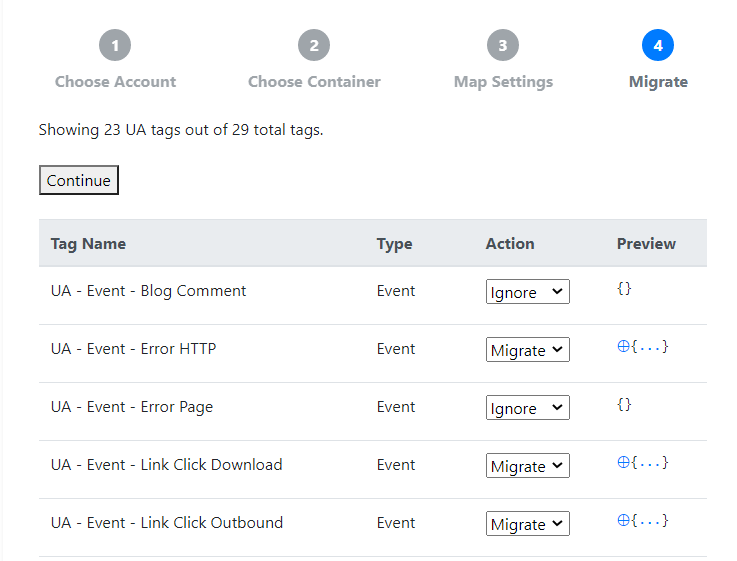

A free tool for GTM practitioners
Launch the ToolBuilt with ❤️ by Noise to Signal
Since the launch of Google Analytics App+Web, many GTM practitioners are eager to see what's new. The App+Web Migration Tool was created to make it as simple as possible to migrate your old Universal Analytics tags over to App+Web. Here's how it works.
Once the migration is complete, you can continue to edit the new tags in GTM.


